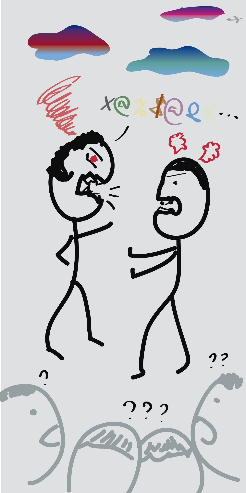

So this week’s culture topic is about conflicts. Actually, I had a conflict with my friend this morning. We are in different cities by hours of flights. From time to time, silly things pop up from nowhere and we are not happy. It’s just another silly thing. Without getting into too much details, it was caused we are busy at our daytime and there was miscommunication. At first I felt from not being understood to getting a little bit upset. I thought my friend was not considerate enough, and so didn’t I.Unless it’s an unforgivable event, I usually have better mood a couple hours later and want to be the first one to break the ice. That’s what I did. I initiate the talking with my friend and share my feeling and perspective. In the meanwhile I ask a lot of questions to try to understand her points. If I could go back, I wouldn’t do anything differently. I think conflicts happen. Every time we solve a conflict, we grow and know each individual better. That makes us more mature and deepen our relationship with others. I don’t think I learn a lot from this experience.
